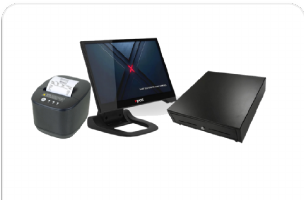
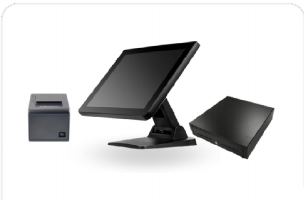
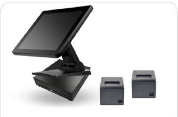
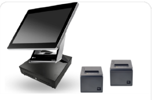

TPV / POS completo
Gestiona mesas, barra, pedidos, cobros y cierres desde un TPV en la nube.
Qamarero digitaliza toda la operativa de un negocio hostelero: TPV, comandas, cocina, carta digital, pedidos, pagos, reservas, delivery, fidelización, stock, costes y gestión del equipo.
El core para digitalizar el restaurante: TPV, comandero, carta QR, pedidos, pagos y cocina.
Gestiona mesas, barra, pedidos, cobros y cierres desde un TPV en la nube.
Toma comandas desde el móvil, sin papel, con licencias ilimitadas para el equipo.
Carta editable con fotos, vídeos, alérgenos, idiomas y cambios en tiempo real.
El cliente consulta la carta, realiza el pedido y paga desde la mesa para reducir esperas.
Las comandas llegan directamente a cocina o barra, organizadas por estados y zonas.
Coordina la salida de platos y el pase entre cocina y sala desde una pantalla específica.
Un QR único por cuenta para locales sin mesas fijas, barras, terrazas o zonas compartidas.
Permite pedidos autónomos en momentos de mucha afluencia y reduce colas en caja.
Incluye el núcleo operativo de Qamarero. Implementación Basic: 200 € + IVA.
Atrae clientes, haz que vuelvan y mejora la experiencia con información útil y automatización.
Gestiona reservas, mesas y disponibilidad sin llamadas, mensajes dispersos ni libretas.
Centraliza historial, preferencias, visitas y datos para conocer mejor a quienes vuelven.
Crea recompensas y acciones para premiar al cliente recurrente y aumentar la frecuencia de visita.
Recoge feedback, detecta incidencias y dirige a los clientes satisfechos hacia tus perfiles públicos.
Utiliza la información del cliente para personalizar la atención y detectar oportunidades de venta.
Growth funciona junto con el módulo Basic. Implementación Pro: 500 € + IVA.
Vende fuera del local con canal propio, integraciones, riders y recogida.
Recibe pedidos desde tu propio canal y reduce la dependencia de las comisiones de marketplaces.
Centraliza en la operativa los pedidos procedentes de plataformas de terceros.
Organiza repartidores, pedidos, estados y flujo de reparto desde el mismo sistema.
Permite realizar pedidos para recoger en el local y vender más sin ocupar una mesa.
Delivery funciona junto con el módulo Basic. Implementación Pro: 500 € + IVA.
Pasa de intuir lo que sucede en el negocio a verlo con datos y tomar decisiones a tiempo.
Gestiona equipo, registro horario, incidencias y organización interna desde una única herramienta.
Asigna, organiza y supervisa tareas operativas para que cada persona sepa qué tiene que hacer.
Consulta productos y disponibilidad en tiempo real para reducir roturas y compras innecesarias.
Registra entradas, salidas, consumos y movimientos para mantener el inventario controlado.
Prepara la operativa antes del servicio y deja listas las tareas clave para que el equipo trabaje con orden.
Agiliza la recepción y gestión de facturas para reducir trabajo administrativo y errores manuales.
Calcula unidades, preparaciones y costes por producto para conocer el margen real de cada plato.
Organiza horarios y necesidades de personal según la demanda prevista del negocio.
Analiza ventas, productos, horarios y rendimiento para detectar oportunidades y desviaciones.
Comprueba márgenes, food cost y evolución del negocio para tomar decisiones más claras.
Control funciona junto con el módulo Basic. Implementación Pro: 500 € + IVA.
Estas demos se abren en una pestaña nueva y permiten explorar una experiencia real.
Abre una mesa, mete productos y comprueba cómo se cobra en barra o sala.
Abrir demo TPV →Prueba cómo un camarero toma comandas desde el móvil en plena hora punta.
Abrir demo Waiter →Mira lo que ve el cliente al escanear el QR desde una mesa real.
Abrir carta demo →Growth, Delivery y Control incluyen siempre Basic. Los importes no incluyen IVA.
Operaciones
Basic + crecer y fidelizar
Basic + reparto y recogida
Basic + costes y equipo
Basic + Growth + Delivery + Control
Basic siempre va incluido. Marca Growth, Delivery o Control y verás el precio final al momento.
Comprueba de forma orientativa cuánto pueden generar tus reservas y cuánto valor operativo puedes recuperar al digitalizar procesos.
Responde unas preguntas sobre operativa, ventas y gestión. Recibirás un diagnóstico para detectar fugas, prioridades y áreas donde Qamarero podría ayudarte.
Qamarero funciona con muchos TPV, impresoras, tablets y pantallas que ya tienes. Comprueba primero la compatibilidad y añade únicamente lo que falte.
Del local pequeño al restaurante con barra y cocina separadas. Envío estimado de 2–3 días a Península y Baleares.

TPV 15” · impresora LAN · cajón · WiFi.

TPV 15” · impresora USB/LAN · cajón.

TPV Pro · impresora WiFi + LAN · cajón.

TPV Premium · doble WiFi · Router Flint.
El valor no está únicamente en el TPV, sino en conectar toda la operativa y reducir la cantidad de herramientas separadas.
TPV, carta, comandero, pagos, reservas, delivery, stock y analítica en un mismo ecosistema.
Si la solución no encaja, no estás atado. Esto reduce el riesgo de la decisión.
No estás obligado a comprar equipos propietarios. Puedes reutilizar hardware compatible.
Centraliza lo que otros negocios resuelven con varias aplicaciones, facturas e integraciones.
Una experiencia rápida y sencilla, preparada para funcionar durante la hora punta.
Soporte técnico 365 días, de 09:00 a 00:00, para acompañar la operativa.
Casos de éxito para conocer cómo otros restaurantes han conectado y digitalizado su operativa.
Un caso real de implementación de Qamarero en hostelería.
Ver caso →Operación conectada y una experiencia digital más fluida.
Ver caso →Un bar tradicional que dio el paso hacia una gestión digital.
Ver caso →Solicita una demo y cuéntanos qué tipo de negocio tienes. El mensaje se abre directamente en WhatsApp para que puedas enviarlo sin rellenar formularios.